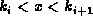
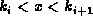

Data Structures and Algorithms
with Object-Oriented Design Patterns in Java
Data Structures and Algorithms
with Object-Oriented Design Patterns in Java
Program  gives the naıve version
of the find method of the MWayTree class.
The find method takes a Comparable object
and locates the item in the search tree which matches the given object.
gives the naıve version
of the find method of the MWayTree class.
The find method takes a Comparable object
and locates the item in the search tree which matches the given object.
Program: MWayTree class find method (linear search).
Consider the execution of the find method for a node T
of a an M-way search tree.
Suppose the object of the search is x.
Clearly, the search fails when  (lines 10-11).
In this case, null is returned.
(lines 10-11).
In this case, null is returned.
Suppose .
The linear search on lines 13-20 considers the keys
 , , , ...,
, , , ...,  , in that order.
If a match is found,
the matching object is returned immediately (lines 16-17).
, in that order.
If a match is found,
the matching object is returned immediately (lines 16-17).
Otherwise, when the main loop terminates there are three possibilities:
i=0 and ;
 and ; or
i=n-1 and .
In all three cases,
the appropriate subtree in which to continue search is
and ; or
i=n-1 and .
In all three cases,
the appropriate subtree in which to continue search is  (line 21).
(line 21).
Clearly the running time of Program
is determined by the main loop.
In the worst case, the loop is executed M-1 times.
Therefore, at each node in the search path
at most M-1 object comparisons are done.
Consider an unsuccessful search in an M-way search tree. The running time of the find method is
in the worst case,
where h is the height of the tree
and is the time required to compare two objects.
Clearly, the time for a successful search has the same asymptotic bound.
If the tree is balanced and  ,
then the running time of Program
is ,
where K is the number of keys in the tree.
,
then the running time of Program
is ,
where K is the number of keys in the tree.
 Copyright © 1998 by Bruno R. Preiss, P.Eng. All rights reserved.
Copyright © 1998 by Bruno R. Preiss, P.Eng. All rights reserved.